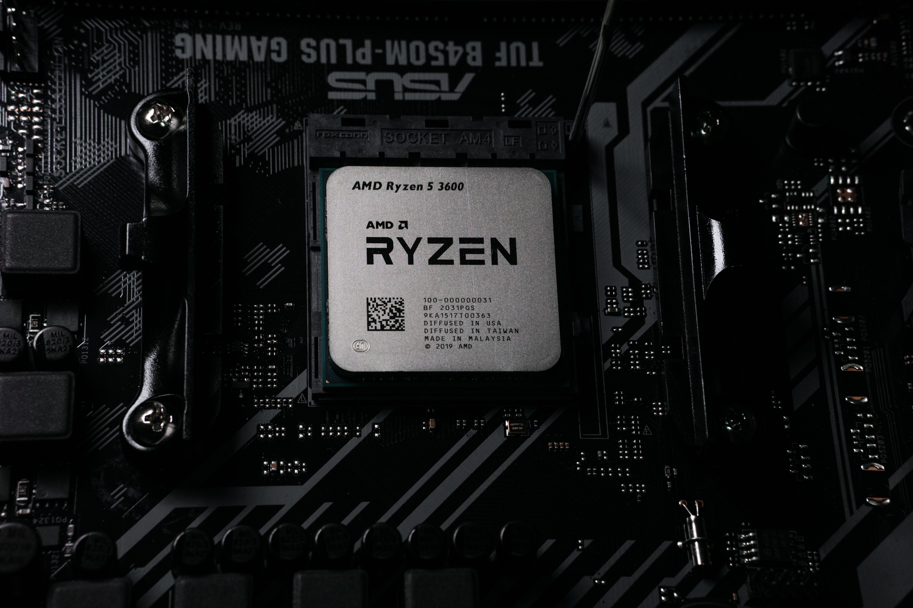

Central Processing Unit:
The central processing unit also known as the CPU is an important component to take in when an individual is buying a pre-built or building a computer. Two of the most popular central processing units are Intel and AMD. There are a couple of factors to take in account when considering a central processing unit for a build, such as how many cores does it have or how fast the central processing unit can process the information.
AMD is another good option when it comes to central processing units. There are many options amongst the different types of central processing units. For more high graphics and high-end gaming there are a range of Ryzen 7 to Ryzen 9 x series that offer more cores and threads, which allows multitasking and high-end gaming. With AMD Ryzen 3 and Ryzen 5 x series, an individual could still accomplish everyday tasks and gaming. When an individual is building a computer, they would have a better variety of central processing units to choose from and from different price points. They would be able to shop around at different vendors to obtain a central processing unit for a good price.

Intel processors come in different types depending on the needs of the individual. The Intel Core series of processors have a range of i3 processors to i9 processors which will provide needs to customers based on the type of task a person will need. The i3 processors are built for simple tasks, fast charging and more hours per charge. The i5 processors are built for personal use, use at an organization, 4k capabilities, great for gaming and videos. The i7 processors are great for tasks that involve higher speeds such as multitasking, high-end gaming, and video. The i9 processor allows overclocking at higher speeds that allows even better gaming and multitasking than the i7 processor. Depending on what a consumer wants to accomplish they could choose the appropriate Intel central processing unit, whether they are building their own or buying a pre-built computer.